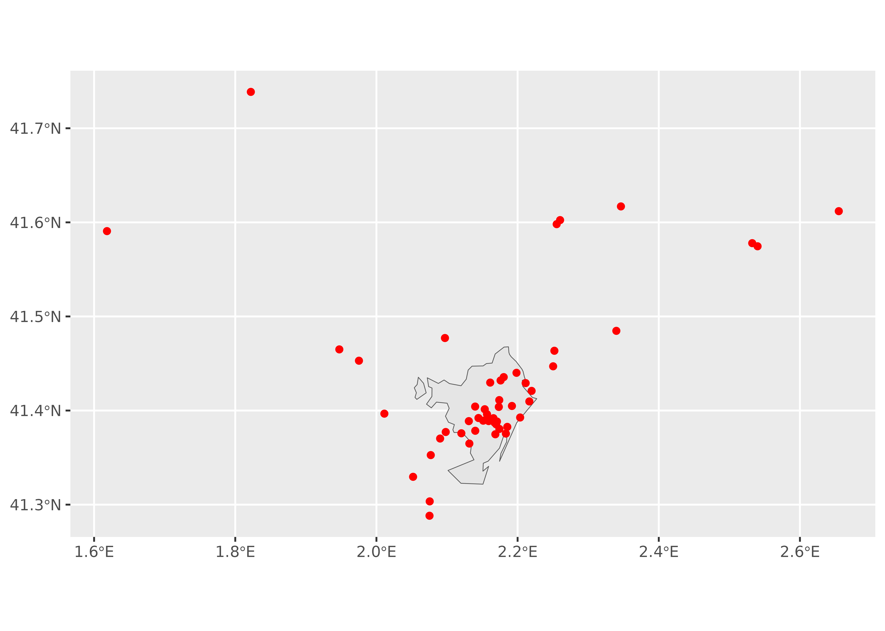
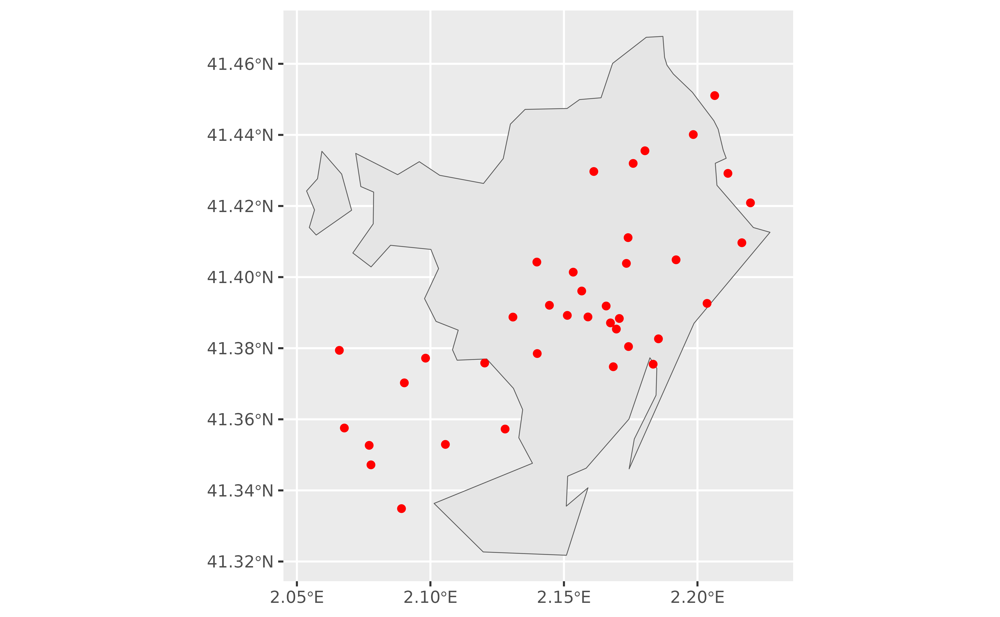
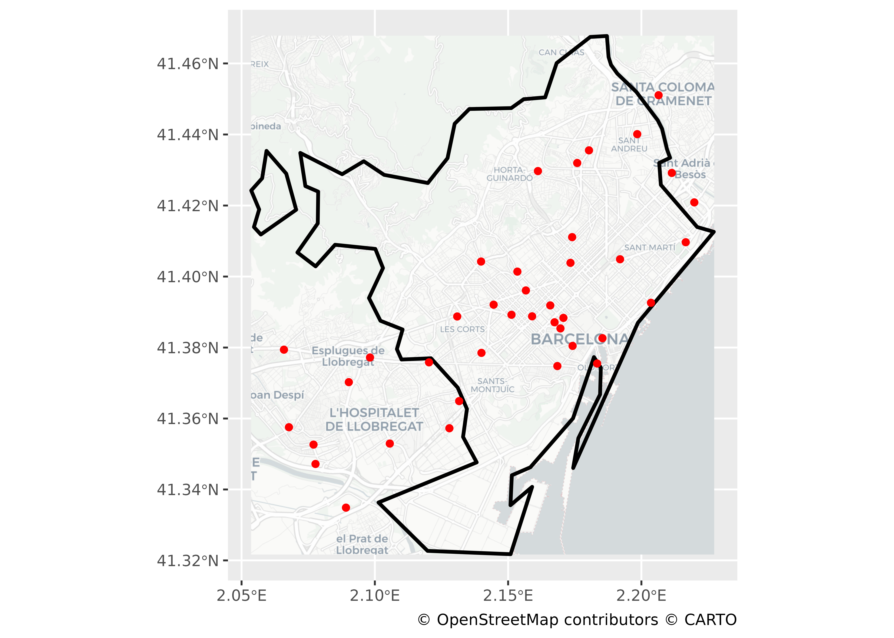

arcgeocoder and static maps
Combine arcgeocoder with sf and terra
Source:vignettes/articles/static.Rmd
static.RmdExample 1: sf objects
The following example shows how it is possible to create a nice static map with data retrieved with arcgeocoder and converting it to an sf object:
library(arcgeocoder)
library(dplyr)
library(sf) # spatial objects
library(ggplot2)
library(mapSpain) # sf objects of Spain
# McDonalds in Barcelona, Spain
mc <- arc_geo_multi("McDonalds",
city = "Barcelona",
region = "Catalonia", countrycode = "ES",
category = "Food", limit = 50,
custom_query = list(outFields = c("LongLabel", "Type,StAdd"))
)
# To sf
mc_sf <- st_as_sf(mc,
coords = c("lon", "lat"),
# here we have the wkid
crs = mc$latestWkid[1]
)
bcn <- esp_get_munic(munic = "Barcelona") %>%
st_transform(mc$latestWkid[1])
ggplot(bcn) +
geom_sf() +
geom_sf(data = mc_sf, color = "red")
# We can restrict the results to the bbox of BCN in the query
bbox <- st_bbox(bcn) %>% paste0(collapse = ",")
bbox
#> [1] "2.05362,41.32175,2.22717,41.46744"
mc2_sf <- arc_geo_multi("McDonalds",
city = "Barcelona",
region = "Catalonia", countrycode = "ES",
category = "Food", limit = 50,
custom_query = list(
outFields = c("LongLabel", "Type", "StAdd"),
searchExtent = bbox
)
) %>%
st_as_sf(coords = c("lon", "lat"), crs = mc$latestWkid[1])
ggplot(bcn) +
geom_sf() +
geom_sf(data = mc2_sf, color = "red")
Example 2: terra objects
We can add static map tiles thanks to maptiles package and tidyterra for plotting. The tiles themselves are represented here as terra objects:
library(maptiles)
library(tidyterra)
# Usually use crs 3857 for getting tiles
bcn_3857 <- st_transform(bcn, 3857)
osm_tiles <- get_tiles(bcn_3857, provider = "CartoDB.Positron", crop = TRUE)
ggplot() +
geom_spatraster_rgb(data = osm_tiles, maxcell = Inf) +
geom_sf(data = bcn, fill = NA, color = "black", linewidth = 1) +
geom_sf(data = mc2_sf, color = "red") +
coord_sf(crs = 3857) +
labs(caption = "(c) OpenStreetMap contributors, (c) CARTO")
Session info
Details
#> ─ Session info ───────────────────────────────────────────────────────────────
#> setting value
#> version R version 4.5.2 (2025-10-31 ucrt)
#> os Windows Server 2022 x64 (build 26100)
#> system x86_64, mingw32
#> ui RTerm
#> language en
#> collate English_United States.utf8
#> ctype English_United States.utf8
#> tz UTC
#> date 2026-01-02
#> pandoc 3.1.11 @ C:/HOSTED~1/windows/pandoc/31F387~1.11/x64/PANDOC~1.11/ (via rmarkdown)
#> quarto NA
#>
#> ─ Packages ───────────────────────────────────────────────────────────────────
#> package * version date (UTC) lib source
#> arcgeocoder * 0.2.1 2026-01-02 [1] local
#> bslib 0.9.0 2025-01-30 [1] RSPM
#> cachem 1.1.0 2024-05-16 [1] RSPM
#> class 7.3-23 2025-01-01 [3] CRAN (R 4.5.2)
#> classInt 0.4-11 2025-01-08 [1] RSPM
#> cli 3.6.5 2025-04-23 [1] RSPM
#> codetools 0.2-20 2024-03-31 [3] CRAN (R 4.5.2)
#> curl 7.0.0 2025-08-19 [1] RSPM
#> DBI 1.2.3 2024-06-02 [1] RSPM
#> desc 1.4.3 2023-12-10 [1] RSPM
#> digest 0.6.39 2025-11-19 [1] RSPM
#> dplyr * 1.1.4 2023-11-17 [1] RSPM
#> e1071 1.7-17 2025-12-18 [1] RSPM
#> evaluate 1.0.5 2025-08-27 [1] RSPM
#> farver 2.1.2 2024-05-13 [1] RSPM
#> fastmap 1.2.0 2024-05-15 [1] RSPM
#> fs 1.6.6 2025-04-12 [1] RSPM
#> generics 0.1.4 2025-05-09 [1] RSPM
#> ggplot2 * 4.0.1 2025-11-14 [1] RSPM
#> glue 1.8.0 2024-09-30 [1] RSPM
#> gtable 0.3.6 2024-10-25 [1] RSPM
#> htmltools 0.5.9 2025-12-04 [1] RSPM
#> htmlwidgets 1.6.4 2023-12-06 [1] RSPM
#> jquerylib 0.1.4 2021-04-26 [1] RSPM
#> jsonlite 2.0.0 2025-03-27 [1] RSPM
#> KernSmooth 2.23-26 2025-01-01 [3] CRAN (R 4.5.2)
#> knitr 1.51 2025-12-20 [1] RSPM
#> lifecycle 1.0.4 2023-11-07 [1] RSPM
#> magrittr 2.0.4 2025-09-12 [1] RSPM
#> mapSpain * 0.10.0 2024-12-15 [1] RSPM
#> maptiles * 0.11.0 2025-12-12 [1] RSPM
#> otel 0.2.0 2025-08-29 [1] RSPM
#> pillar 1.11.1 2025-09-17 [1] RSPM
#> pkgconfig 2.0.3 2019-09-22 [1] RSPM
#> pkgdown 2.2.0 2025-11-06 [1] any (@2.2.0)
#> png 0.1-8 2022-11-29 [1] RSPM
#> proxy 0.4-29 2025-12-29 [1] RSPM
#> purrr 1.2.0 2025-11-04 [1] RSPM
#> R.cache 0.17.0 2025-05-02 [1] RSPM
#> R.methodsS3 1.8.2 2022-06-13 [1] RSPM
#> R.oo 1.27.1 2025-05-02 [1] RSPM
#> R.utils 2.13.0 2025-02-24 [1] RSPM
#> R6 2.6.1 2025-02-15 [1] RSPM
#> ragg 1.5.0 2025-09-02 [1] RSPM
#> rappdirs 0.3.3 2021-01-31 [1] RSPM
#> RColorBrewer 1.1-3 2022-04-03 [1] RSPM
#> Rcpp 1.1.0 2025-07-02 [1] RSPM
#> rlang 1.1.6 2025-04-11 [1] RSPM
#> rmarkdown 2.30 2025-09-28 [1] RSPM
#> S7 0.2.1 2025-11-14 [1] RSPM
#> sass 0.4.10 2025-04-11 [1] RSPM
#> scales 1.4.0 2025-04-24 [1] RSPM
#> sessioninfo * 1.2.3 2025-02-05 [1] any (@1.2.3)
#> sf * 1.0-23 2025-11-28 [1] RSPM
#> styler 1.11.0 2025-10-13 [1] RSPM
#> systemfonts 1.3.1 2025-10-01 [1] RSPM
#> terra 1.8-86 2025-11-28 [1] RSPM
#> textshaping 1.0.4 2025-10-10 [1] RSPM
#> tibble 3.3.0 2025-06-08 [1] RSPM
#> tidyr 1.3.2 2025-12-19 [1] RSPM
#> tidyselect 1.2.1 2024-03-11 [1] RSPM
#> tidyterra * 0.7.2 2025-04-14 [1] RSPM
#> units 1.0-0 2025-10-09 [1] RSPM
#> vctrs 0.6.5 2023-12-01 [1] RSPM
#> withr 3.0.2 2024-10-28 [1] RSPM
#> xfun 0.55 2025-12-16 [1] RSPM
#> yaml 2.3.12 2025-12-10 [1] RSPM
#>
#> [1] D:/a/_temp/Library
#> [2] C:/R/site-library
#> [3] C:/R/library
#> * ── Packages attached to the search path.
#>
#> ──────────────────────────────────────────────────────────────────────────────